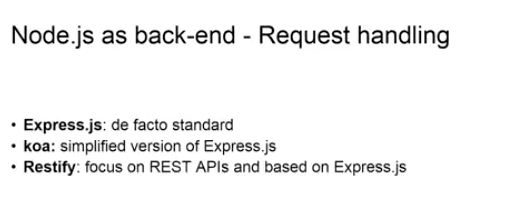
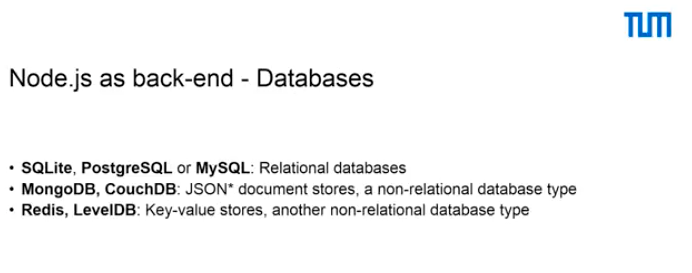
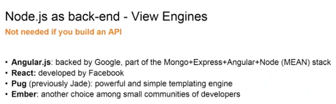

In this one we're going to talk about what is needed for a web application. So, let's start right off with the most important part of a web application, which is a request handler.
A request handler is something that takes on requests and answers them, and gives you the power to answer them in a meaningful way.
The first request handler that I would like to talk to you about is Express.js. It is de facto standard for Node.js. You would hardly ever find anything else, but there are alternatives and we just listed another two of them. The first alternative is koa, which is a simplified version of Express.js. It stems from the same developers as Express.js, but it's a much lighter version. Another request handler is Restify. Restify focuses only on constructing APIs. So, you would not have views, which we're gonna explain in a moment. Restify is also heavily based on Express.js. So, as you see, Express.js always comes in.
The next thing you would probably need when you construct a web application is a database. All of the data that you usually see on websites is stored in a database and there are two big categories of databases. The first category is called relational databases and we see a list of three databases of this type in the first line. SQLite, PostgreSQL and MySQL are all relational databases and they can be used and are actually used with Node.js. But with Node.js it is much more common to use a non-relational database system and specifically MongoDB.
MongoDB allows you to store JSON objects, as we have seen them in previous lectures, into a database, which is Mongo. You can then retrieve these objects or retrieve only certain fields of these objects. Redis is another alternative. Redis is a key-value store, which is now again different from MongoDB because you can only store a key. You have a key, access this key and you can only store a value by this key. So, for example, if the key is age, in my case it would be 23. So, key-value stores are maybe thought for smaller applications, but nonetheless you always need a database. MongoDB as well as Redis are non-relational databases and if you want to know more about these, I invite you to look at the web. There's plenty of guides.
The last component that you might need to build a web application is called a view engine. I say might because it's actually not necessary. View engines are only necessary if you build a full application with front- and back-end. But if you only want to build an API, you won't need a view engine. Here is a list of a couple of view engines, which we think you might find interesting.
Starting with Angular.js, Angular is important because it's part of something called the MEAN stack, which stands for Mongo, Express, Angular and Node. As we have seen, Mongo would be the database part of our application, while Express would handle every request, incoming and outgoing. Angular would in this case be the view engine, while Node is the base of our application. Another popular framework is React. It was developed by Facebook and it's widely used. Pug is another framework and it's maybe one of the best if you're starting with Node.js. This is because it's very similar in syntax to plain HTML. So, if you are used to writing HTML files, Pug might be the choice for you. It was previously called Jade, but due to some copyright issues, developers had to rename it into Pug. Ember is another choice among small communities of developers.